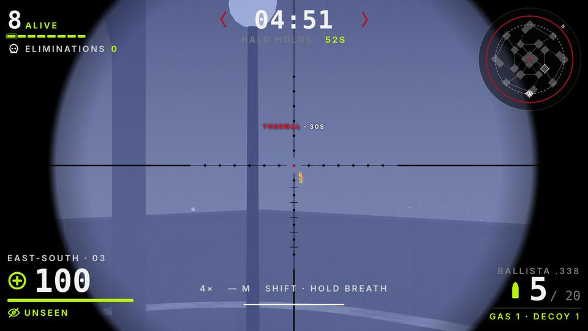
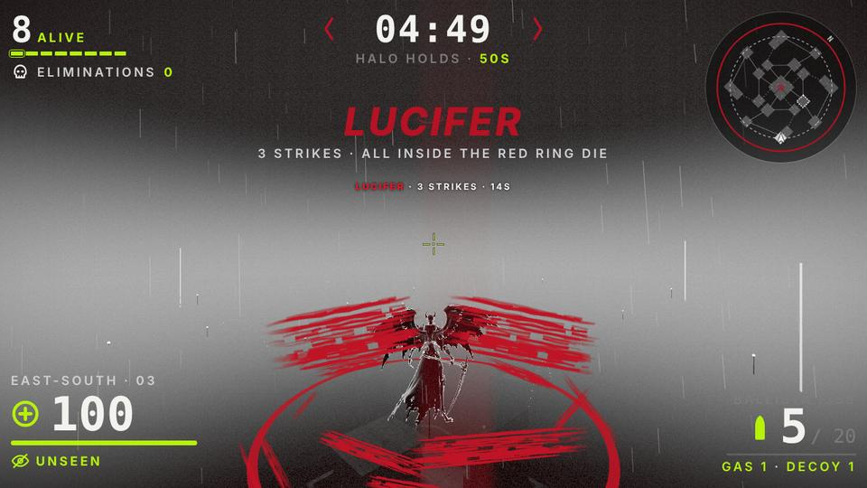

Weapons and powers in Sniper City
Every sniper starts with the same kit. Solo matches add an air drop and several powers that you can each use a limited number of times.
Standard kit
| Item | What it does |
|---|---|
| Ballista .338 | Bolt-action sniper rifle. 5-round magazine, 20 rounds in reserve, 4× and 8× scope. A head shot kills. In solo matches its bullets travel at 330 metres a second and drop with distance. |
| Desert Eagle .50 | Sidearm for close range. 7-round magazine and 21 in reserve in solo matches. |
| Hammer | Melee hit for anyone who gets too close. |
| Gas grenade | Hold to aim, release to throw. The cloud hurts anyone who stays in it. |
| Decoy | Draws fire so you can trace the red thread back to the shooter. |
| Play dead | Drop and lie still. Moving gets you up again. |
Scope vision: thermal and night vision

A switch on the scope cycles between normal, thermal and night vision. Thermal shows enemies as heat, through fog and through walls. Night vision cuts the fog and shows enemies you have a clear line to. You get 30 seconds of scope vision for the whole match, and the time only runs while you are scoped with it on.
Air drop and the AWM
At half-time a red beam marks a rooftop and a crate lands there. Stand next to it to open it. Inside is an AWM with three bullets. Each bullet kills in one shot, its scope shows enemies through walls, and its shots pass through walls. When the three bullets are spent you go back to the Ballista with the ammunition you had.
RPG-7
Everyone carries a rocket launcher with two rockets. A rocket kills anyone close to the blast and wounds those further out. The blast hurts you too, so do not fire at your feet.
Dogs
Three dogs are tied on different rooftops, each marked by a pale beam. Stand next to one for a moment to unleash it, and it follows you. Aim at an enemy within 80 metres and give the order, and the dog runs across the roofs, jumps the gaps and kills them. Enemies can shoot a dog on its way in, and so can you.
The prayer
Once a match you can pray to the angel. It takes half your health and a tenth of your bullets. In return you see the district through the angel's eyes for 5 seconds, and then every enemy is marked through walls for 15 seconds more.
Lucifer

Three kills in a row with your guns or hammer, without dying, summon Lucifer. Your body stays where it was while you fly for 15 seconds. You have three strikes, and each one kills everyone inside the red ring around him. Every kill adds 5 seconds, up to 30. If Lucifer kills no one, he takes half your health when he leaves. Kills made by the dog, a rocket, the AWM or Lucifer himself do not count toward the three.
The air drop, scope vision, RPG, dogs, prayer and Lucifer are in solo matches only for now.
Play Sniper City free